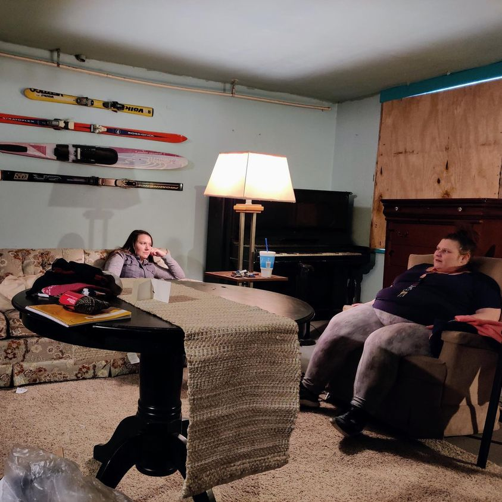

Timeline photos
The person on the left is my friend Ashleigh. She’s talking to Destiny. Destiny became homeless after her mom died. She lived in a tent at our tent village for a couple years. The last I checked Destiny is doing really well.
But the person I want to focus on today is Ashleigh.
Ashleigh, in high school, went on a mission trip to Philadelphia where she met a homeless man that changed her life. (I should remember his name because he probably is the most important person in this story.)
Ashleigh was so moved by his life that she decided at that point to dedicate her life to the unloved. (It reminds me of the Buddhist story of Siddhartha who ventured outside his palace grounds and encountered an elderly person, a sick person and a corpse. Those encounters changed his life forever. He gave up his palace life and pursued a life of enlightenment.)
At 17 years old she came to our tent community and was determined to become involved.
Ashleigh graduated from college this past year. And she is now dedicating her entire life to her organization called The Landing.
Ashleigh comes from a well-off family. She was raised in comfort. Yet, like Siddhartha she chose to give it all up to dedicate her life to the unloved.
I am in a turbulent mental state right now. (It’s probably because my life is in transition and I’m weaning off of my antidepressants.)
But some days I’m so disgusted by humanity. How selfish and small minded and pathetic they are. And then there are days, like today, where I see people like Ashleigh and I’m so blown away by the goodness in people.
We know for a fact that the Ashleighs of the world are few and far between. But that’s just because we are living in a selfish, greedy country. It’s cultural. In a Democracy we have the power to make a country of Ashleighs if we chose to do so.
I truly believe we each have the entire universe living within us. We are literally made from the stuff of stars. We have the extreme void of a black hole and we have the life creating energy of a star. We have it all.
Every human could become someone like Ashleigh if we wanted it and valued it and celebrated it.